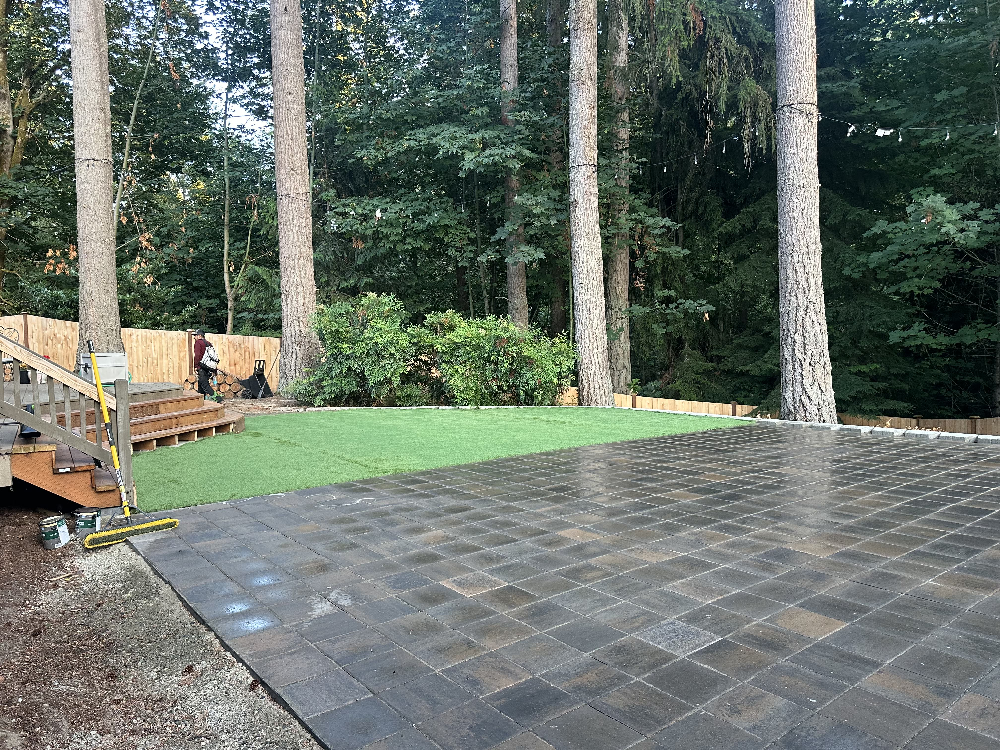
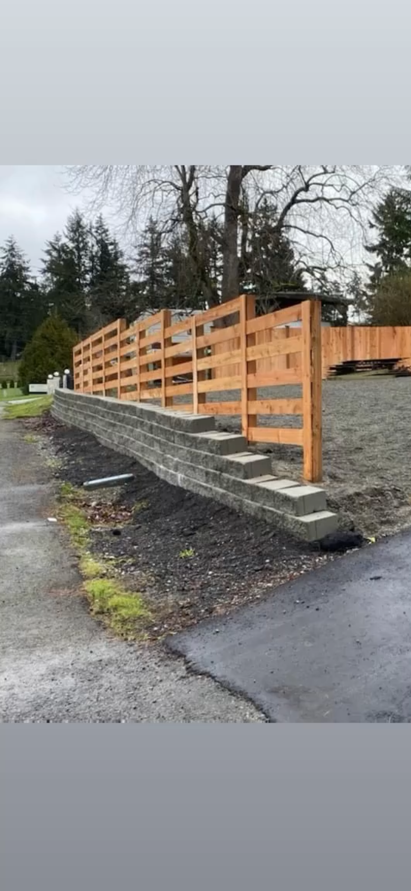
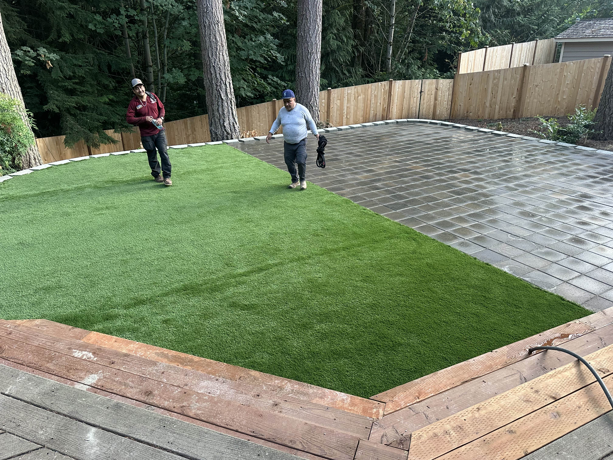
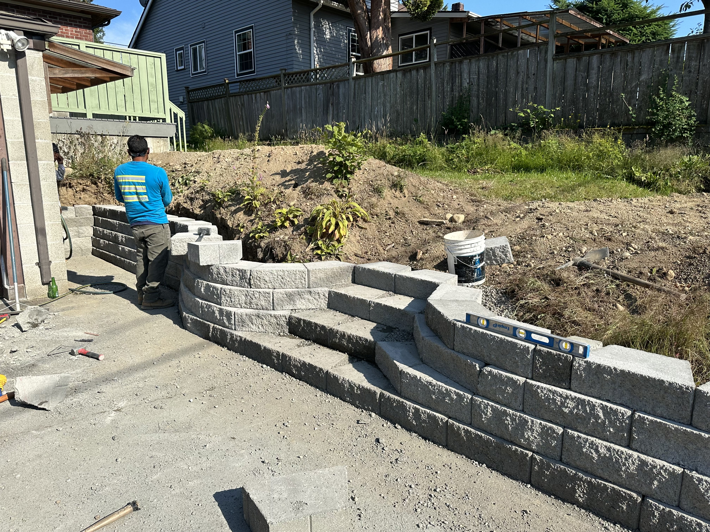
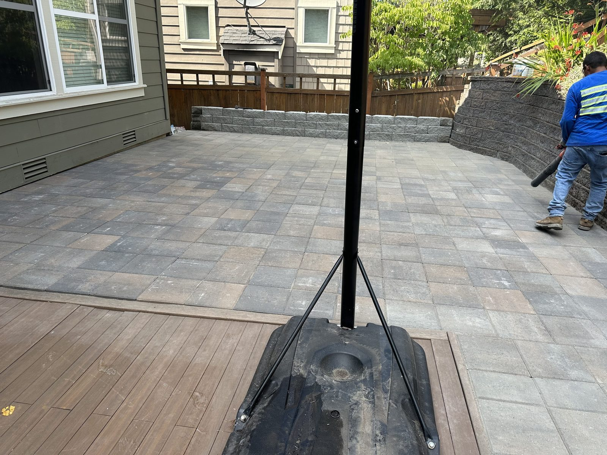
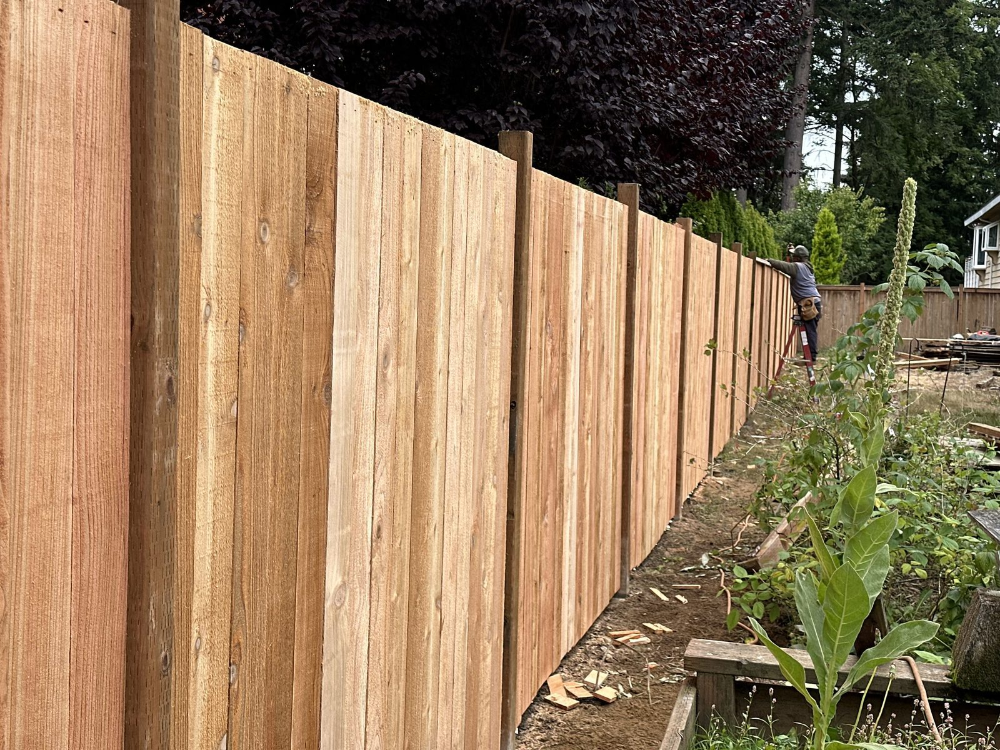

About Westland Landscape
With over 10 years of experience transforming outdoor spaces, Westland Landscape and Construction specializes in creating stunning backyard environments that enhance your lifestyle and property value. From custom hardscaping to beautiful fence installations, we bring your vision to life — all at prices that work with your budget.
🏗️ Full Construction
Complete landscaping and hardscaping construction services
🎨 Custom Design
Personalized landscape designs tailored to your space
🛡️ Licensed & Insured
Fully licensed contractors with comprehensive insurance
💰 Budget-Friendly
Among the most competitively priced services in the Greater Seattle Area
Our Specialties
Landscape Design & Installation
Complete backyard and frontyard transformations including plant selection, garden design, irrigation systems, and outdoor lighting to create your perfect outdoor oasis.
Hardscaping & Stonework
Custom patios, walkways, retaining walls, fire pits, water features, and outdoor kitchens. We work with natural stone, pavers, and concrete.
Fence Installation & Repair
Privacy fences, hog wire fences, ranch fences, decorative fencing, gates, and repairs. We install wood, vinyl, aluminum, and composite fencing to enhance security and aesthetics.
Artificial Grass Installation
Low-maintenance synthetic turf for lawns, play areas, and pet-friendly yards. Enjoy a lush, green lawn year-round without mowing, watering, or fertilizing.
Complete Outdoor Construction
Pergolas, gazebos, outdoor structures, deck construction, and any custom outdoor building project to extend your living space outdoors.
Proudly Serving the Greater Seattle Area
We build premium outdoor spaces across the Eastside and Seattle. If you’re in one of these cities, we’d love to help design and build your next project.
Bellevue
Elegant patios, retaining walls, and outdoor living spaces tailored to upscale homes in neighborhoods like West Bellevue and Somerset.
Redmond
Family-friendly backyards with paver patios, fire features, and low‑maintenance planting—perfect for larger lots.
Sammamish
Privacy fences, tiered landscapes, and custom stonework that fit the terrain and scale of Sammamish properties.
Seattle
City‑lot transformations with smart drainage, modern hardscapes, and lighting for year‑round curb appeal.
Kirkland
Refined outdoor upgrades—walkways, garden beds, and decks—to complement lakeside and suburban homes.
Issaquah
Slope‑friendly designs, retaining solutions, and outdoor rooms built for comfort and Northwest style.
Not seeing your city? We also work in Renton, Bothell, Shoreline, Lynnwood, Everett, and Kent. Request a free estimate.
Our Recent Projects
Transform your outdoor space with our expert landscaping and hardscaping services. Here are some of our recent transformations:






What Our Customers Say
"Westland transformed our backyard into an amazing outdoor living space. The fire pit and patio are perfect for entertaining!"
"Professional work from start to finish. Our new fence and landscaping have increased our property value significantly. Highly recommend!"
"The water feature they installed is absolutely stunning. Carlos and his team exceeded our expectations in every way."
Frequently Asked Questions
How much does landscaping cost in Seattle?
Every project is different, and we work with all sorts of budgets — big or small. Our services are among the most competitively priced in the Greater Seattle Area, and we'll always find a way to make your vision work within your budget. Contact us for a free, no-obligation estimate tailored to your property.
What areas do you serve?
We serve the Greater Seattle Area including Seattle, Bellevue, Kirkland, Redmond, Renton, Bothell, Issaquah, Sammamish, Shoreline, Lynnwood, Everett, and Kent.
Are you licensed and insured?
Yes, Westland Landscape and Construction is fully licensed and insured. We carry comprehensive liability insurance and workers' compensation coverage to protect both our team and your property.
How long does a typical landscaping project take?
Project timelines depend on scope and complexity. A simple fence installation may take 1–3 days, while a full backyard transformation with hardscaping, patios, and planting typically takes 2–4 weeks. We'll provide a detailed timeline during your free consultation.
Do you offer free estimates?
Yes! We offer completely free, no-obligation estimates. Contact us by phone at (206) 356-0814 or fill out our online form, and we'll schedule a convenient time to visit your property and discuss your project.
Do you install artificial turf / synthetic grass?
Yes! We install premium artificial turf for residential and commercial properties across the Greater Seattle Area. Our synthetic grass solutions are perfect for lawns, play areas, pet runs, and rooftops. They look natural, drain well in Seattle's rainy climate, and save you time and money on mowing, watering, and fertilizing year-round.
What is the best time of year to landscape in Seattle?
The best time for most landscaping projects in Seattle is late spring through early fall (April–October), when the weather is drier and plants establish more easily. However, hardscaping, fence installation, and artificial grass can be done year-round. We recommend booking early in the season to secure your preferred timeline. Contact us anytime for a free consultation — we'll help you plan the ideal start date for your project.